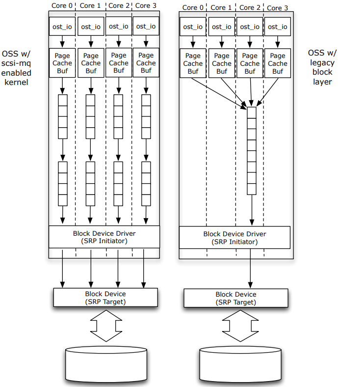

My article about character devices is quite popular, so I decided to write something about another big class of devices in Linux – block devices.
This type of device is used to access various storage hardware types – hard disks, SSD, etc.
Here I want to describe blk-mq based devices in modern (>= 5.0) Linux kernels and a previous type of device for a bit older but still actual kernels.
Block devices vs. Character devices
Character devices are typically called streams. It’s really a stream of bytes. We can read bytes one by one or by chunks, but we can’t do ‘seek’ on the data and access random position in a stream. Data is not buffered. Access is almost real-time. Examples of character devices: serial ports and parallel ports, sound cards, pseudo-devices like /dev/random.
Block devices are always buffering data i/o and support random access. You can seek any position and read (or write) any portion of the data. This is the actual representation of the storage devices—examples of block devices: disks (mostly), USB cameras, etc.
Additionally, the I/O process of the block device may be managed by some scheduler to optimize system load and data access time.
Please note that this is not a strict rule. Also, it’s not common for all operating systems. FreeBSD doesn’t use block devices at all, for example. In Linux, it’s possible to use a block device as a character device using a special RAW driver, but it’s now deprecated.
Single queue and multi-queue
Originally Linux block devices were designed for the HDD with spinning discs and moving heads. Such hardware cannot support parallel access to the different chunks of data on separate disc sectors. Some scheduler is required, and the device supports only a single queue for read and write requests. This is the Linux kernel block device framework.
Modern SSD devices support fast random access and may serve multiple I/O requests. For such a purpose, the kernel supports a new framework – blk-mq with multiple queues.
You get more information about blk-mq in this nice article.
Image source: https://arxiv.org/pdf/1504.07481.pdf
This framework was introduced in Linux kernel versions 4.x, but since version 5.0 blk-mq is default and the old framework was removed. All drivers should be rewritten.
Of course, blk-mq supports single queue mode, so there are no compatibility problems.
My machine is equipped with SSD and running Linux kernel version 5.3.0, so I will focus mostly on blk-mq. I will provide some examples for the legacy framework.
Basic structures
struct gendisk
Introduced in kernel 2.4, gendisk structure is at the core of the block subsystem.
This structure represents a disk device and holds all necessary information like device name, queues, user, and system data.
Here is gendisk structure from the 5.3 kernels. As you can see, this structure is quite clear and well-documented.
struct gendisk {
/* major, first_minor and minors are input parameters only,
* don't use directly. Use disk_devt() and disk_max_parts().
*/
int major; /* major number of driver */
int first_minor;
int minors; /* maximum number of minors, =1 for
* disks that can't be partitioned. */
char disk_name[DISK_NAME_LEN]; /* name of major driver */
char *(*devnode)(struct gendisk *gd, umode_t *mode);
unsigned short events; /* supported events */
unsigned short event_flags; /* flags related to event processing */
/* Array of pointers to partitions indexed by partno.
* Protected with matching bdev lock but stat and other
* non-critical accesses use RCU. Always access through
* helpers.
*/
struct disk_part_tbl __rcu *part_tbl;
struct hd_struct part0;
const struct block_device_operations *fops;
struct request_queue *queue;
void *private_data;
int flags;
struct rw_semaphore lookup_sem;
struct kobject *slave_dir;
struct timer_rand_state *random;
atomic_t sync_io; /* RAID */
struct disk_events *ev;
#ifdef CONFIG_BLK_DEV_INTEGRITY
struct kobject integrity_kobj;
#endif /* CONFIG_BLK_DEV_INTEGRITY */
int node_id;
struct badblocks *bb;
struct lockdep_map lockdep_map;
};
The kernel provides sets of the function for allocation, deallocation of the gendisk, and adding/removing disks. Most important is:
struct gendisk *alloc_disk(int minors) - allocate new gendisk structure, minors is the maximum number of minor numbers (partitions) that this disk can have. void add_disk(struct gendisk *disk) - add new disk to the system. Please note that gendisk structure must be initialized before adding new disk. void set_capacity(struct gendisk *disk, sector_t size) - specify capacity (in sectors) of the new disk; void del_gendisk(struct gendisk *gp) - delete disk from the system. void put_disk(struct gendisk *disk) - release memory allocated in alloc_disk(int minors);
Typical initialization routine of the gendisk structure is setting disk name, setting flags, initialization I/O queue, and setting driver private data.
This procedure is common for all kernel versions. The major difference is queue initialization. It’s different for blk-mq and older frameworks.
It’s important to register a new block device with a new major number.
int register_blkdev(unsigned int major, const char * name) - register a new block device, if major is 0 kernel will try to allocate any unused major number.
gendisk initialization (actually full disc block device initialization) code for the kernel versions 4.x (single queue):
#include <linux/genhd.h>
#include <linux/blkdev.h>
void block_dev_init()
{
spinlock_t *lk; /* Main lock for the device */
struct gendisk *gdisk;
int major_number = register_blkdev(0, "testblk");
gdisk = alloc_disk(1);
if (!gdisk) {
return;
}
spin_lock_init(&lk);
snprintf(gdisk->disk_name, 8, "blockdev"); /* Block device file name: "/dev/blockdev" */
gdisk->flags = GENHD_FL_NO_PART_SCAN; /* Kernel won't scan for partitions on the new disk */
gdisk->major = major_number;
gdisk->fops = &blockdev_ops; /* Block device file operations, see below */
gdisk->first_minor = 0;
gdisk->queue = blk_init_queue(req_fun, &lk); /* Init I/O queue, see below */
set_capacity(block_device->gdisk, 1024 * 512); /* Set some random capacity, 1024 sectors (with size of 512 bytes) */
add_disk(gdisk);
}
gendisk file options are sets functions for the device file operations, like on character devices.
You should specify open, close, and ioctl functions. You can do whatever you want in the open/close functions. Some software may use ioctl requests to get disk geometry and some other capabilities. Nowadays, it’s optional.
#include <linux/fs.h>
int blockdev_open(struct block_device *dev, fmode_t mode)
{
printk("Device %s opened"\n, dev->bd_disk->disk_name);
return 0;
}
void blockdev_release(struct gendisk *gdisk, fmode_t mode)
{
printk("Device %s closed"\n, dev->bd_disk->disk_name);
}
int blockdev_ioctl (struct block_device *dev, fmode_t mode, unsigned cmd, unsigned long arg)
{
return -ENOTTY; /* ioctl not supported */
}
static struct block_device_operations blockdev_ops = {
.owner = THIS_MODULE,
.open = blockdev_open,
.release = blockdev_release,
.ioctl = blockdev_ioctl
};
In this example, only one flag is used – GENHD_FL_NO_PART_SCAN. This flag forbids the kernel to scan for partitions on the new block devices. Sure our example block device can’t serve any partitions like real hardware.
You can check this Linux kernel header file to get more info about available flags: include/linux/genhd.h
Function blk_init_queue is used to initialize a single I/O queue for the device.
This function is quite simple to use. Only two arguments are required:
struct request_queue * blk_init_queue (request_fn_proc * rfn, spinlock_t * lock);
request_fn_proc is a function to be called to process requests that have been placed in the queue.
Here is a declaration of this function:
void request_fn_proc(struct request_queue *q);
Only one argument with an actual request to process.
Using request_queue we can fetch requests from the queue, check the direction (READ or WRITE) of the new request, and get data buffer to transfer.
An elementary example of the request_fn_proc:
static void block_request(struct request_queue *q)
{
int direction;
int err = -EIO;
u8 *data;
struct request *req = blk_fetch_request(q); /* get one top request from the queue */
while (req) {
if (__blk_end_request_cur(req, err)) { /* check for the end */
break;
}
/* Data processing */
direction = rq_data_dir(req);
if (direction == WRITE) {
printk("Writing data to the block device\n");
} else {
printk("Reading data from the block devicen\n");
}
data = bio_data(req->bio); /* Data buffer to perform I/O operations */
/* */
req = blk_fetch_request(q); /* get next request from the queue */
}
}
Please note that with real hardware, we really need to deal with sectors, current positions, etc.
For this purpose we can use functions like this: blk_rq_pos(req), blk_rq_cur_sectors(req), blk_rq_cur_bytes(req) and so on.
Please check this Linux kernel header file to find more functions: include/linux/blkdev.h
This code is well commented.
blk-mq and kernels >= 5.0
Now it’s time to switch to the blk-mq framework.
You can use the previous example almost as-is. Only one thing is changing here – queue initialization.
With blk-mq we need to use more complex blk_mq_init_sq_queue function.
struct request_queue *blk_mq_init_sq_queue(struct blk_mq_tag_set *set,
const struct blk_mq_ops *ops,
unsigned int queue_depth,
unsigned int set_flags);
struct blk_mq_tag_set is a utility structure to store all params like driver private data, commands size, max queue depth, and so on.
This structure is initializing inside blk_mq_init_sq_queue using other params of the function, which we’ll see later.
struct blk_mq_tag_set {
/*
* map[] holds ctx -> hctx mappings, one map exists for each type
* that the driver wishes to support. There are no restrictions
* on maps being of the same size, and it's perfectly legal to
* share maps between types.
*/
struct blk_mq_queue_map map[HCTX_MAX_TYPES];
unsigned int nr_maps; /* nr entries in map[] */
const struct blk_mq_ops *ops;
unsigned int nr_hw_queues; /* nr hw queues across maps */
unsigned int queue_depth; /* max hw supported */
unsigned int reserved_tags;
unsigned int cmd_size; /* per-request extra data */
int numa_node;
unsigned int timeout;
unsigned int flags; /* BLK_MQ_F_* */
void *driver_data;
struct blk_mq_tags **tags;
struct mutex tag_list_lock;
struct list_head tag_list;
};
Most of the fields are optional, and you can leave it as-is if you don’t (or can’t) really want to set some values.
struct blk_mq_ops it’s a set of the function pointers. You can find a declaration of this structure in the Linux kernel header: include/linux/blk-mq.h
In the simplest cases, drivers must define queue_rq function to serve I/O requests. This is equivalent to request_fn_proc in the example above.
Here is an example of the queue_rq function. Let’s discover how it works:
#include <linux/blk-mq.h>
int do_request(struct request *rq, unsigned int *nr_bytes)
{
struct bio_vec bvec;
struct req_iterator iter;
loff_t pos = blk_rq_pos(rq) << SECTOR_SHIFT; /* Required position for the Read or Write */
void* data;
unsigned long data_len;
/* Iterate over reuquests in the queue */
rq_for_each_segment(bvec, rq, iter)
{
data = page_address(bvec.bv_page) + bvec.bv_offset; /* Get I/O data */
data_len = bvec.bv_len; /* Length of the data buffer */
if (rq_data_dir(rq) == WRITE) {
printk("Writing data to the blk-mq device\n");
} else {
printk("Reading data from the blk-mq device\n");
}
pos += b_len;
*nr_bytes += data_len; /* Increment amount of the processed bytes. */
}
return 0;
}
/* Simple example of the blk-mq I/O function */
blk_status_t queue_rq(struct blk_mq_hw_ctx *hctx, const struct blk_mq_queue_data* bd)
{
unsigned int nr_bytes = 0;
blk_status_t status = BLK_STS_OK;
struct request *rq = bd->rq; /* Get one top request */
/*
Start new request procedure.
Please note that this function sets a timer for the data transaction.
This internal timer is used to measure request processing time and to detect problems with hardware.
*/
blk_mq_start_request(rq);
/* Serve request */
if (do_request(rq, &nr_bytes) != 0) {
status = BLK_STS_IOERR;
}
/* Notify blk-mq about processed bytes */
if (blk_update_request(rq, status, nr_bytes)) {
BUG();
}
/* End request procedure */
__blk_mq_end_request(rq, status);
return status;
}
/* Set I/O function */
static struct blk_mq_ops mq_ops = {
.queue_rq = queue_rq,
};
void block_dev_init()
{
struct blk_mq_tag_set tag_set;
/* */
/* Create new queue with depth 128 and with on flag to enable queues merging. */
gdisk->queue = blk_mq_init_sq_queue(&tag_set, &mq_ops, 128, BLK_MQ_F_SHOULD_MERGE);
/* */
}
As you can blk-mq code is much complex, you can find some similarities with the example above. You can see additional request start/stop routines that can help the kernel track request execution time and detect a stuck block device.
In both examples, we are getting data I/O buffer. In the real driver’s case, all data from this buffer should be transferred to (or read from) the hardware. You can use additional buffering here if it’s required and doesn’t break performance.
In the virtual block device driver (like our example), you can also use a memory buffer to simulate real hardware. The size of this buffer must be equal to devise capacity, which was set in set_capacity();
It’s safe to use simple memcpy(). The kernel block device subsystem handles all nuances of copying to the user and copying from the user.
Under the blk_mq_init_sq_queue()
Let’s dig down a little bit to see how blk_mq_init_sq_queue() is implemented.
This function is simple wrapper for blk_mq_init_queue() which is used initialized blk_mq_tag_set as only one argument. Structure tag_set is initialized at the beginning of the function using arguments.
/* Initialize passed tag_set */
memset(set, 0, sizeof(*set));
set->ops = ops; /* Set options */
set->nr_hw_queues = 1; /* Number of the hw queues is 1 */
set->nr_maps = 1;
set->queue_depth = queue_depth; /* Depth of the queue */
set->numa_node = NUMA_NO_NODE;
set->flags = set_flags; /* Set options */
The next step is sanity check and initialization of the additional data. The blk_mq_alloc_tag_set does this.
This function is quite long, and I don’t want to post it here. You can check the source code (kernel version 5.3) here. As you can see, this function mostly doing parameter checks and memory allocations.
And the final step is the creation of the actual queue using blk_mq_init_queue(), which requires configured and allocated tag_set;
struct request_queue *q = blk_mq_init_queue(set);
return q;
This function is a simple wrapper around blk_alloc_queue_node and blk_mq_init_allocated_queue where kernel creates request queues as a linked list, sets io buffers, timers, and locking.
You may notice that blk_mq_init_sq_queue sets only 1 hardware queue. It’s because this function is a Single Queue initializer. If your hardware supports multiple queues and you wish to create a multi-queue block device driver, you have to write your own function around blk_mq_alloc_tag_set and blk_mq_init_queue.
blk-mq driver example
Now it’s time for a complete example. Here is the source code of the blk-mq driver. You can use it as a reference.
#include <linux/init.h>
#include <linux/module.h>
#include <linux/slab.h>
#include <linux/vmalloc.h>
#include <linux/fs.h>
#include <linux/genhd.h>
#include <linux/blkdev.h>
#include <linux/buffer_head.h>
#include <linux/blk-mq.h>
#include <linux/hdreg.h>
#ifndef SECTOR_SIZE
#define SECTOR_SIZE 512
#endif
static int dev_major = 0;
/* Just internal representation of the our block device
* can hold any useful data */
struct block_dev {
sector_t capacity;
u8 *data; /* Data buffer to emulate real storage device */
struct blk_mq_tag_set tag_set;
struct request_queue *queue;
struct gendisk *gdisk;
};
/* Device instance */
static struct block_dev *block_device = NULL;
static int blockdev_open(struct block_device *dev, fmode_t mode)
{
printk(">>> blockdev_open\n");
return 0;
}
static void blockdev_release(struct gendisk *gdisk, fmode_t mode)
{
printk(">>> blockdev_release\n");
}
int blockdev_ioctl(struct block_device *bdev, fmode_t mode, unsigned cmd, unsigned long arg)
{
printk("ioctl cmd 0x%08x\n", cmd);
return -ENOTTY;
}
/* Set block device file I/O */
static struct block_device_operations blockdev_ops = {
.owner = THIS_MODULE,
.open = blockdev_open,
.release = blockdev_release,
.ioctl = blockdev_ioctl
};
/* Serve requests */
static int do_request(struct request *rq, unsigned int *nr_bytes)
{
int ret = 0;
struct bio_vec bvec;
struct req_iterator iter;
struct block_dev *dev = rq->q->queuedata;
loff_t pos = blk_rq_pos(rq) << SECTOR_SHIFT;
loff_t dev_size = (loff_t)(dev->capacity << SECTOR_SHIFT);
printk(KERN_WARNING "sblkdev: request start from sector %lld pos = %lld dev_size = %lld\n", blk_rq_pos(rq), pos, dev_size);
/* Iterate over all requests segments */
rq_for_each_segment(bvec, rq, iter)
{
unsigned long b_len = bvec.bv_len;
/* Get pointer to the data */
void* b_buf = page_address(bvec.bv_page) + bvec.bv_offset;
/* Simple check that we are not out of the memory bounds */
if ((pos + b_len) > dev_size) {
b_len = (unsigned long)(dev_size - pos);
}
if (rq_data_dir(rq) == WRITE) {
/* Copy data to the buffer in to required position */
memcpy(dev->data + pos, b_buf, b_len);
} else {
/* Read data from the buffer's position */
memcpy(b_buf, dev->data + pos, b_len);
}
/* Increment counters */
pos += b_len;
*nr_bytes += b_len;
}
return ret;
}
/* queue callback function */
static blk_status_t queue_rq(struct blk_mq_hw_ctx *hctx, const struct blk_mq_queue_data* bd)
{
unsigned int nr_bytes = 0;
blk_status_t status = BLK_STS_OK;
struct request *rq = bd->rq;
/* Start request serving procedure */
blk_mq_start_request(rq);
if (do_request(rq, &nr_bytes) != 0) {
status = BLK_STS_IOERR;
}
/* Notify kernel about processed nr_bytes */
if (blk_update_request(rq, status, nr_bytes)) {
/* Shouldn't fail */
BUG();
}
/* Stop request serving procedure */
__blk_mq_end_request(rq, status);
return status;
}
static struct blk_mq_ops mq_ops = {
.queue_rq = queue_rq,
};
static int __init myblock_driver_init(void)
{
/* Register new block device and get device major number */
dev_major = register_blkdev(dev_major, "testblk");
block_device = kmalloc(sizeof (struct block_dev), GFP_KERNEL);
if (block_device == NULL) {
printk("Failed to allocate struct block_dev\n");
unregister_blkdev(dev_major, "testblk");
return -ENOMEM;
}
/* Set some random capacity of the device */
block_device->capacity = (112 * PAGE_SIZE) >> 9; /* nsectors * SECTOR_SIZE; */
/* Allocate corresponding data buffer */
block_device->data = kmalloc(block_device->capacity << 9, GFP_KERNEL);
if (block_device->data == NULL) {
printk("Failed to allocate device IO buffer\n");
unregister_blkdev(dev_major, "testblk");
kfree(block_device);
return -ENOMEM;
}
printk("Initializing queue\n");
block_device->queue = blk_mq_init_sq_queue(&block_device->tag_set, &mq_ops, 128, BLK_MQ_F_SHOULD_MERGE);
if (block_device->queue == NULL) {
printk("Failed to allocate device queue\n");
kfree(block_device->data);
unregister_blkdev(dev_major, "testblk");
kfree(block_device);
return -ENOMEM;
}
/* Set driver's structure as user data of the queue */
block_device->queue->queuedata = block_device;
/* Allocate new disk */
block_device->gdisk = alloc_disk(1);
/* Set all required flags and data */
block_device->gdisk->flags = GENHD_FL_NO_PART_SCAN;
block_device->gdisk->major = dev_major;
block_device->gdisk->first_minor = 0;
block_device->gdisk->fops = &blockdev_ops;
block_device->gdisk->queue = block_device->queue;
block_device->gdisk->private_data = block_device;
/* Set device name as it will be represented in /dev */
strncpy(block_device->gdisk->disk_name, "blockdev\0", 9);
printk("Adding disk %s\n", block_device->gdisk->disk_name);
/* Set device capacity */
set_capacity(block_device->gdisk, block_device->capacity);
/* Notify kernel about new disk device */
add_disk(block_device->gdisk);
return 0;
}
static void __exit myblock_driver_exit(void)
{
/* Don't forget to cleanup everything */
if (block_device->gdisk) {
del_gendisk(block_device->gdisk);
put_disk(block_device->gdisk);
}
if (block_device->queue) {
blk_cleanup_queue(block_device->queue);
}
kfree(block_device->data);
unregister_blkdev(dev_major, "testblk");
kfree(block_device);
}
module_init(myblock_driver_init);
module_exit(myblock_driver_exit);
MODULE_LICENSE("GPL");
And simple Makefile:
BINARY := test_blockdev
KERNEL := /lib/modules/$(shell uname -r)/build
ARCH := x86
C_FLAGS := -Wall
KMOD_DIR := $(shell pwd)
TARGET_PATH := /lib/modules/$(shell uname -r)/kernel/drivers/char
OBJECTS := blockdev.o
ccflags-y += $(C_FLAGS)
obj-m += $(BINARY).o
$(BINARY)-y := $(OBJECTS)
$(BINARY).ko:
make -C $(KERNEL) M=$(KMOD_DIR) modules
install:
cp $(BINARY).ko $(TARGET_PATH)
depmod -a
clean:
rm -f *.ko
rm -f *.o
After module building and loading, we can test it.
Let’s try the fdisk utility.
$ sudo fdisk /dev/blockdev Welcome to fdisk (util-linux 2.31.1). Changes will remain in memory only, until you decide to write them. Be careful before using the write command. Device does not contain a recognized partition table. Created a new DOS disklabel with disk identifier 0x7c8bee17. Command (m for help): o Created a new DOS disklabel with disk identifier 0xd7002c1e. Command (m for help): w The partition table has been altered. Syncing disks. $ sudo fdisk /dev/blockdev Welcome to fdisk (util-linux 2.31.1). Changes will remain in memory only, until you decide to write them. Be careful before using the write command. Command (m for help): p Disk /dev/blockdev: 448 KiB, 458752 bytes, 896 sectors Units: sectors of 1 * 512 = 512 bytes Sector size (logical/physical): 512 bytes / 512 bytes I/O size (minimum/optimal): 512 bytes / 512 bytes Disklabel type: dos Disk identifier: 0xd7002c1e
As you can fdisk recognizes our block device as a valid disk and successfully creates a new DOS partition table with id 0xd7002c1e.
This partition table is stored in our driver’s memory buffer and valid until the driver is unloaded.
Same for the graphical tools
{kind=link}
But what happens if we try to format this device and create a new partition? You can try it. Unfortunately, this operation will fail. The problem is that creating the new partitions must create new block device instances like /dev/blockdev0, /dev/blockdev1, etc.
All software expects to find such devices, and this is the point of the failure because this example driver didn’t create any new per-partition devices.
The driver should handle partitioning operations (which is normally handled by the hardware). Hope to describe this in new interesting material.
Thanks for reading!
Great tutorial, helped me a lot. Any updates about continuation about making partitions?
The myblock_driver_exit function is missing the release of blockdev:
kobject_put(blockdev);
Without this loading the module, then unloading, and loading again fails with
kobject_add_internal failed for blockdev with -EEXIST, don’t try to register things with the same name in the same directory.
I really liked your tutorial and managed to get everything working fine with kernel 5.4.*.
However, when compiling with kernel 5.15 there are two ERRORS:
ERROR: modpost: “alloc_disk” undefined
ERROR: modpost: “blk_mq_init_sq_queue” undefined
A quick search on the internet revealed that the API has changed for newer kernels.
I am miles away from doing this rewrite myself.
Do you have time and fun to update your great tutorial?
Thanks
Great tutorial. Thanks a lot.